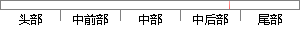

图 所示为验证集的ROC（Receiver Operating Characteristic）曲线，其中横坐标为FPR（false positive rate），纵坐标为TPR（true positive rate），这样不必设定阈值就可以看出这个分类器的性能，曲线下方的面积为AUC（Area Under Curve）。
片段位置图

相似结果|
1
原句片段：图 所示为验证集的ROC（Receiver Operating Characteristic）曲线，其中横坐标为FPR（false positive rate），纵坐标为T
相似片段 1：ROC曲线:接收者操作特征曲线(receiver operating characteristic curve)(https://...横坐标:1-Specificity,伪正类率(False positive rate, FPR),预测为正但实际为...
相似片段 2：(receiver operating characteristic curve,简称ROC曲线...在ROC曲线上,最靠近坐标图左上方的点为敏感性和特...(false positive rate, FPR),计算公式为FPR= FP ...
相似片段 3：在ROC 空间中,每个点的横坐标是FPR,纵坐标是TPR,...如图2所示。 图2 ROC Curve 用ROC curve来表示...ROC 曲线全称是 Receiver Operating Characteristic (ROC...
相似片段 4：特性曲线(receiver operating characteristic curve), ...在ROC曲线上,最靠近坐标图左上方的点为敏感性和...(false positive rate, FPR),计算公式为FPR= FP ...
|
※ 片段修改建议 ※
近似词参考：- 其中：此中 个中
- 这样：如许
- 不必：没必要 无须
- 性能：机能
系统自动生成语句：图 所示为验证集的ROC（Receiver Operating Characteristic）曲线，此中横坐标为FPR（false positive rate），纵坐标为TPR（true positive rate），如许没必要设定阈值就可以看出这个分类器的机能，曲线下方的面积为AUC（Area Under Curve）。
注：本片段修改建议为系统自动生成，仅供参考。